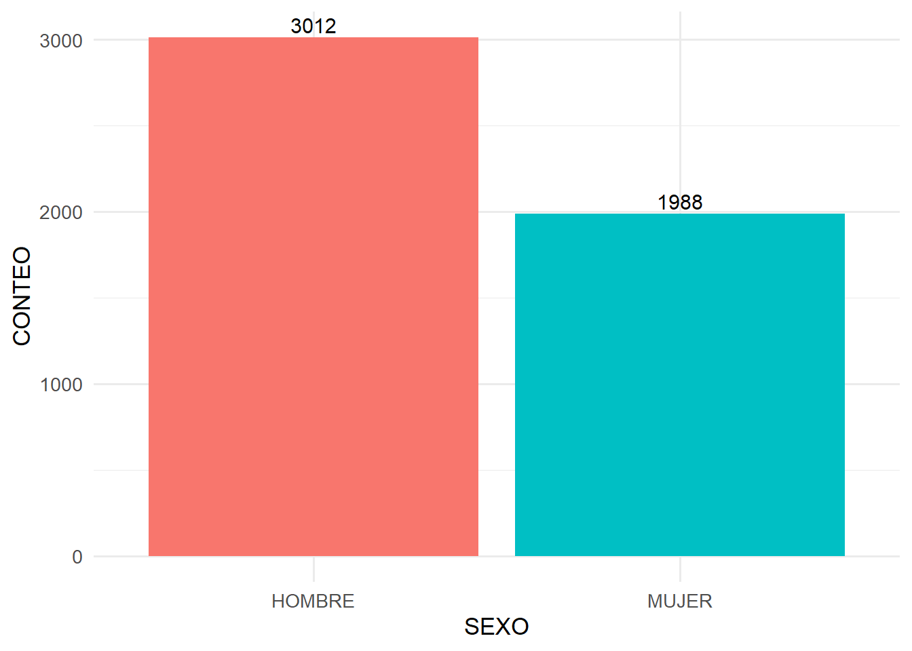
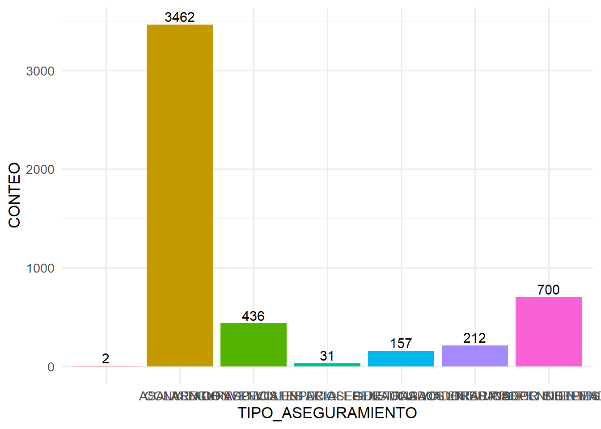
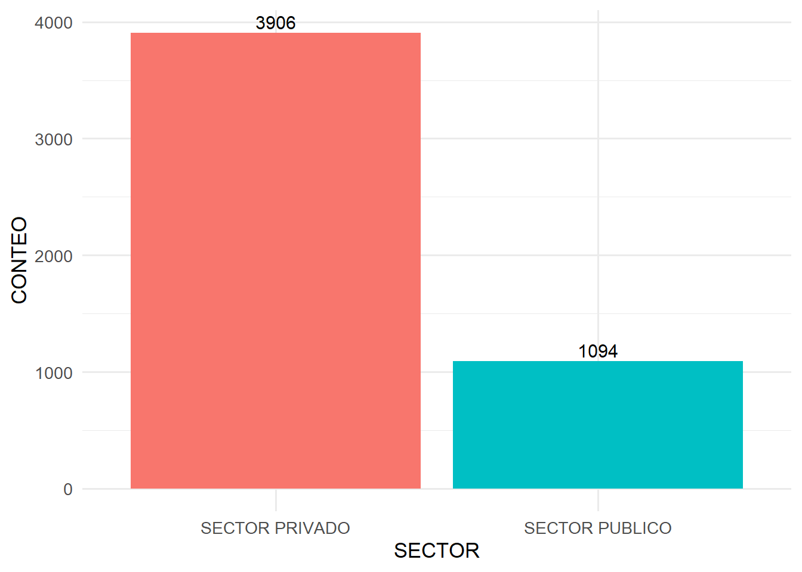
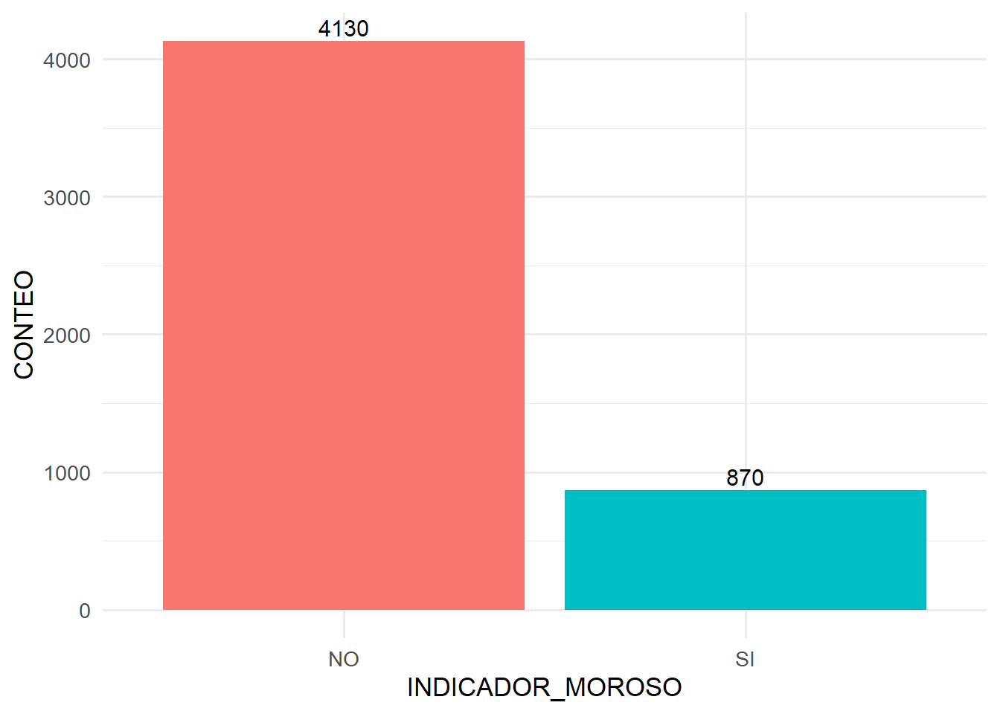
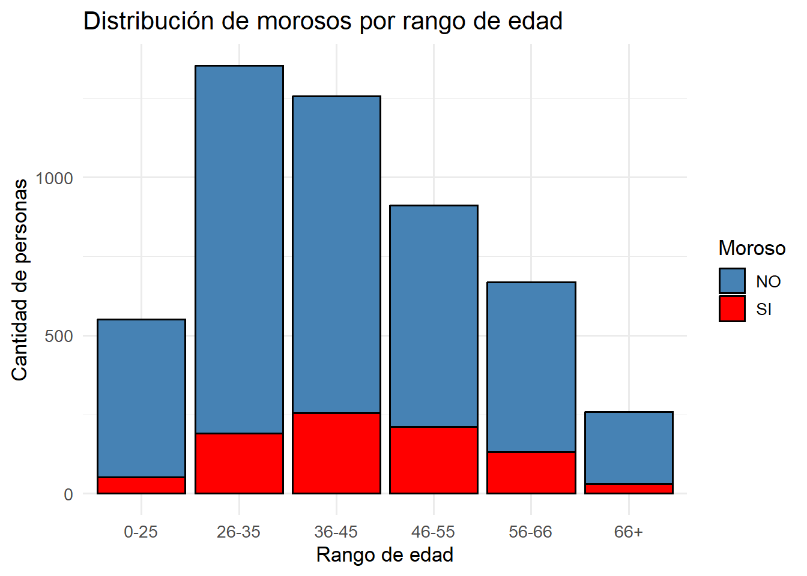
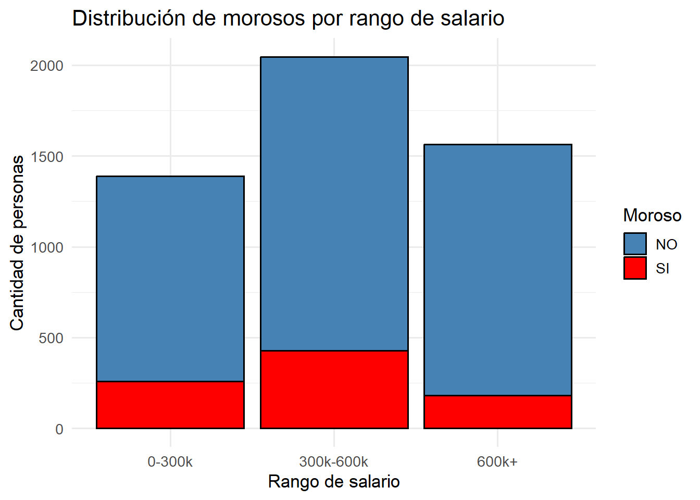
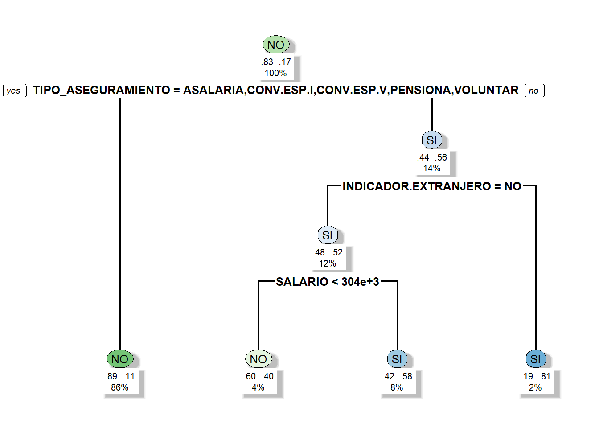

#Necesitamos cambiar las variables para proceder:data$SALARIO <-gsub("\"", "", data$SALARIO) data$SALARIO <-gsub(",", ".", data$SALARIO) data$SALARIO <-as.numeric(data$SALARIO)str(data) #Listo ya tenemos todo bien :)
##Realice una columna donde se identifiquen valores atípicos haciendo uso del Z-Score, de tal manera que si el valor absoluto del Z-Score es mayor a 1,96 se considera un valor atípico. Esto para la columna de salario y edad.
Se asume que ya se conoce que es una Z-Score
library(dplyr)
Adjuntando el paquete: 'dplyr'
The following objects are masked from 'package:stats':
filter, lag
The following objects are masked from 'package:base':
intersect, setdiff, setequal, union
Z.SAL VALORES.SALARIO Z.EDAD VALORES.EDAD
1 NA <NA> 0.006609817 NORMAL
2 3.2767840 ATIPICO 2.476746369 ATIPICO
3 -0.4772468 NORMAL 0.218335807 NORMAL
4 -0.1388214 NORMAL 0.500637127 NORMAL
5 -0.5518286 NORMAL 0.006609817 NORMAL
6 -0.3210648 NORMAL 0.147760477 NORMAL
7 0.2431284 NORMAL -0.275691504 NORMAL
8 -0.3163175 NORMAL -0.416842164 NORMAL
9 -0.4843763 NORMAL -1.475472115 NORMAL
10 4.9563262 ATIPICO -0.134540843 NORMAL
##Detecte el porcentaje de valores faltantes en cada una de las columnas.
porcentaje.na <-sapply(data, function(x) {sum(is.na(x)) /length(x) *100})na <-data.frame(COLUMNA =names(porcentaje.na),PORCENTAJE =round(porcentaje.na, 2))knitr::kable(na, caption ="Porcentaje de valores nulos en cada columna.") #Esto es simplemente para que la tabla se vea mas estetica
Porcentaje de valores nulos en cada columna.
COLUMNA
PORCENTAJE
IDENTIFICACION
IDENTIFICACION
0.00
SEXO
SEXO
0.00
SALARIO
SALARIO
0.06
TIPO_ASEGURAMIENTO
TIPO_ASEGURAMIENTO
0.00
SECTOR
SECTOR
0.00
INDICADOR_ACTIVO
INDICADOR_ACTIVO
0.00
INDICADOR.EXTRANJERO
INDICADOR.EXTRANJERO
0.00
INDICADOR_MOROSO
INDICADOR_MOROSO
0.00
EDAD
EDAD
0.06
Z.SAL
Z.SAL
0.06
VALORES.SALARIO
VALORES.SALARIO
0.06
Z.EDAD
Z.EDAD
0.06
VALORES.EDAD
VALORES.EDAD
0.06
##Impute los valores faltantes haciendo uso de algún método de su preferencia.
moda <-function(x) { ux <-unique(x) ux[which.max(tabulate(match(x, ux)))] #Aca calculamos el valor que mas se repite es un vector, donde primero obtenemos sus valores unicos (base para entender sus frecuencicas). Posterior a ello, cuenta cuantas veces aparece cada uno utilizando match y tabulate, identifica cual tiene la frecuencia mas alta con which.max y devuelve ese valor, es decir, da la moda de un conjunto de datos.}data <- data %>%mutate(SALARIO.IMPUTADO =ifelse(is.na(SALARIO) | SALARIO =="", #Aca vemos las dos posibilidades de que este vacio o tenga un dato NAmean(as.numeric(SALARIO), na.rm =TRUE),#Sacamos promedio para sustituir NAs SALARIO ),EDAD.IMPUTADOS =ifelse(is.na(EDAD) | EDAD =="",round(mean(as.numeric(EDAD), na.rm =TRUE)),#Aca redondeo pues los datos de la tabla son enteros y la edad promedio es decimal. EDAD ),TIPO.ASEGURAMIENTO.IMPUTADO =ifelse(is.na(TIPO_ASEGURAMIENTO) | TIPO_ASEGURAMIENTO =="",moda(TIPO_ASEGURAMIENTO), #Encontramos la moda de os tipos de aseguramiento para que reemplacen los NAs TIPO_ASEGURAMIENTO ) )imputados <- data %>%select (SALARIO.IMPUTADO, EDAD.IMPUTADOS, TIPO.ASEGURAMIENTO.IMPUTADO) %>%head(5)knitr::kable(imputados, caption ="Datos imputados por las columnas vacias.") #Nuevamente arreglamos la esteticad de los resultados
Datos imputados por las columnas vacias.
SALARIO.IMPUTADO
EDAD.IMPUTADOS
TIPO.ASEGURAMIENTO.IMPUTADO
657534.3
42
ASALARIADO
3315014.0
77
PENSIONADOS EN SU PROPIO SISTEMA
270486.0
45
ASALARIADO
544949.8
49
ASALARIADO
210000.0
42
ASALARIADO
##Realice gráficos donde se vea la cantidad de individuos por cada categoría. Analice los resultados.
library(ggplot2)conteo.categoria <-function(df, variable) { df %>%group_by(across({{variable}})) %>%summarise(CONTEO =n(), .groups ="drop") #Aca realizamos una funcion de conteo para las categorias tal que, recibe un data frame y una variable que es la columna dada. entonces agrupamos por las diferntes variables que presenta la columna dada y realiza un conteo de cada una y devuelve una tabla con los diferentes grupos dentreo de la columna y su conteo especifico.}conteo.sexo <-conteo.categoria(data, SEXO)conteo.tipo <-conteo.categoria(data, TIPO_ASEGURAMIENTO)conteo.sector <-conteo.categoria(data, SECTOR)conteo.activo <-conteo.categoria(data, INDICADOR_ACTIVO)conteo.extranjero <-conteo.categoria(data, INDICADOR.EXTRANJERO)conteo.moroso <-conteo.categoria(data, INDICADOR_MOROSO) #Aca preparamos todos los conteos para realizar los respectivos graficos.grafico.cat <-function(df, variable, horizontal =FALSE) {#Aca realizamos una funcion para aplizar a cada tipo de variable categorica y lograr graficarlas. p <-ggplot(df, aes(x = .data[[variable]], y = CONTEO, fill = .data[[variable]])) +geom_col() +geom_text(aes(label = CONTEO),size =4,vjust =ifelse(horizontal, 0.5, -0.3),hjust =ifelse(horizontal, -0.2, 0.5) ) +theme_minimal(base_size =13) +theme(legend.position ="none")if (horizontal) { p <- p +coord_flip() }return(p) }
Analisis de resultados:
#Ahora procedemos a graficar cada variable categorica: grafico.cat(conteo.sexo, "SEXO")

Cabe destacar que, dado que la población masculina es mayor entre los asegurados, las tendencias observadas tienden a reflejar principalmente el comportamiento de los hombres. Esto implica que cualquier análisis agregado podría estar sesgado hacia patrones masculinos, y sería recomendable considerar desagregaciones por sexo para obtener conclusiones más equilibradas pues pueden conllevar a analsis sesgados.
grafico.cat(conteo.tipo, "TIPO_ASEGURAMIENTO")

La mayoría de los asegurados pertenece al grupo de Asalariados, lo que indica que el análisis del conjunto de datos estará fuertemente influenciado por sus características y comportamientos, como la estabilidad laboral, la afiliación regular y la utilización de servicios de salud vinculados al empleo. En contraste, categorías como Convenios Especiales y Pensionados en su propio sistema tienen una participación muy baja, lo que sugiere que las tendencias observadas podrían no reflejar adecuadamente la situación de estos grupos. En consecuencia, el dominio de los asalariados implica que cualquier conclusión general del sistema asegurador estará mayormente orientada por este segmento.
grafico.cat(conteo.sector, "SECTOR")

Se observa que gran parte de los datos corresponde al sector privado, lo que hace que el análisis se centre principalmente en su comportamiento. Esto implica que las tendencias identificadas reflejan sobre todo los patrones de aseguramiento, uso de servicios y riesgos de los afiliados del sector privado, dejando menos visibilidad sobre el comportamiento del sector público. Por ello, las conclusiones podrían no ser completamente representativas de toda la población asegurada, y sería recomendable complementar con información del sector público para tener un panorama más completo del sistema de aseguramiento.
Se denota una predominancia de los asegurados con indicadores de activos, por lo que se toma una vision principalmente enfocada en personas que poseen seguros vigentes, viendo asi la cobertura y el comportamiento en los servicios de asegurados, sin embargo, al ver esa perspectiva de manera mayoritaria se puede perder el hilo de aquellos que no tengan una cobertura actual.
Dado que la mayor parte de los datos corresponde a asegurados no extranjeros, se puede asumir que el análisis representa principalmente la visión nacional del sistema de aseguramiento. Esto permite identificar las características, comportamientos y patrones predominantes entre los asegurados nacionales, aunque limita la representatividad sobre la población extranjera dentro del conjunto de datos.
grafico.cat(conteo.moroso, "INDICADOR_MOROSO")

El cumplimiento de pagos por parte de los asegurados es alto, dado que la proporción de morosos es baja en comparación con los que mantienen sus cuotas al día. Esto sugiere que se pueden implementar seguros más dependientes del pago puntual, contando con un riesgo reducido por incumplimiento.
##Realice un gráfico para cada una de las variables categóricas en donde se vea el porcentaje de personas morosa por cada clase. Analice los resultados.
#Para este ejercicio procedemos por la misma metodología tq:porcentaje.morosos <-function(df, variable) { df %>%group_by(across(all_of(variable))) %>%summarise(total =n(),morosos =sum(INDICADOR_MOROSO =="SI", na.rm =TRUE),porcentaje = morosos / total *100,.groups ="drop"#Vea que nuevamente es una funcion donde tenemos qu recibir un df y la columna por ver, que seria la variable categorica luego se agrupa conforme dicha variable y se cuenta la cantidad de datos y morosos en relacion a la misma para luego dividirla con respecto a los subgrupos categoricos de dicha variable mediante el calculo del porcentaje. )}#Creamos una funcion para graficas de morosos:grafico.morosos <-function(df, variable, horizontal =FALSE) { p <-ggplot(df, aes_string(x = variable, y ="porcentaje", fill = variable)) +geom_col() +geom_text(aes_string(label ="paste0(round(porcentaje,1),'%')"),vjust =ifelse(horizontal, 0.5, -0.3),hjust =ifelse(horizontal, -0.2, 0.5),size =4) +labs(y ="Porcentaje de morosos", x =NULL, title =paste("Morosidad por", variable)) +theme_minimal(base_size =13) +theme(legend.position ="none")if(horizontal) p <- p +coord_flip()return(p)}# calculamos el porcentaje de morosos para graficar:morosos.sexo <-porcentaje.morosos(data, "SEXO")morosos.tipo <-porcentaje.morosos(data, "TIPO_ASEGURAMIENTO")morosos.sector <-porcentaje.morosos(data, "SECTOR")morosos.activo <-porcentaje.morosos(data, "INDICADOR_ACTIVO")morosos.extranjero <-porcentaje.morosos(data, "INDICADOR.EXTRANJERO")
Analisis de resultados:
#Ahora procedemos a graficar cada variable categorica: grafico.morosos(morosos.sexo, "SEXO")
Warning: `aes_string()` was deprecated in ggplot2 3.0.0.
ℹ Please use tidy evaluation idioms with `aes()`.
ℹ See also `vignette("ggplot2-in-packages")` for more information.
Con los graficos ya hechos, se noto que los niveles de morosidad son relativamente altos entre los trabajadores independientes y las personas que no tienen un seguro activo. Esto es lógico en el caso de quienes no poseen seguro activo, ya que la morosidad puede acumularse por falta de pago y posterior cancelación. Por otro lado, es preocupante que los trabajadores independientes descuiden el pago de sus cuotas regularmente. También se identifican variables con morosidad igual a cero: por ejemplo, los pensionados en su propio sistema no presentan morosidad, dado que cuentan con un seguro privado estable; de manera similar, los convenios especiales de asegurados voluntarios muestran bajos niveles de morosidad, probablemente por políticas organizadas de pago y por la menor cantidad de seguros cubiertos. Finalmente, la morosidad en las demás variables categóricas oscila entre el 13% y el 24%, lo cual puede deberse a las diversas condiciones económicas de cada sector y a posibles crisis imprevistas.
##Para las variables numéricas realice gráficos de barras donde se ponga un color de acuerdo a si es moroso o no. Analice los resultados.
data <- data %>%mutate(INDICADOR_MOROSO =toupper(as.character(INDICADOR_MOROSO)),RANGO.EDAD =cut(EDAD.IMPUTADOS,breaks =c(0, 25, 35, 45, 55, 66, Inf),labels =c("0-25", "26-35", "36-45", "46-55", "56-66", "66+"),right =TRUE),RANGO.SALARIO =cut(SALARIO.IMPUTADO,breaks =c(0, 300000, 600000, Inf),labels =c("0-300k", "300k-600k", "600k+"),right =TRUE) )# Gráfico morosidad y edadggplot(data, aes(x = RANGO.EDAD, fill = INDICADOR_MOROSO)) +geom_bar(position ="stack", color ="black") +scale_fill_manual(values =c("SI"="red", "NO"="steelblue")) +labs(title ="Distribución de morosos por rango de edad",x ="Rango de edad",y ="Cantidad de personas",fill ="Moroso") +theme_minimal(base_size =13)

# Gráfico morosidad y salariosggplot(data, aes(x = RANGO.SALARIO, fill = INDICADOR_MOROSO)) +geom_bar(position ="stack", color ="black") +scale_fill_manual(values =c("SI"="red", "NO"="steelblue")) +labs(title ="Distribución de morosos por rango de salario",x ="Rango de salario",y ="Cantidad de personas",fill ="Moroso") +theme_minimal(base_size =13)

Analisis de resultados:
Con respecto a la edad y la morosidad, el análisis indica que la morosidad se concentra principalmente en el rango de edad de 36 a 55 años, lo que sugiere que las personas en su etapa productiva media podrían enfrentar mayores compromisos financieros y presiones económicas, elevando su riesgo de retrasos en los pagos. En consecuencia, la mayoría de los morosos se encuentra entre los 26 y 55 años. Por otro lado, los grupos más jóvenes (14–25 años) y los adultos mayores (>66 años) muestran niveles de morosidad más bajos, probablemente debido a una menor carga de deudas, ingresos más estables o el acceso a subsidios y pensiones.
Por parte de los salarios, la morosidad es más elevada en el grupo de ingresos medios (300 001–600 000), donde se concentra la mayor parte de la población asegurada. En contraste, los salarios bajos muestran niveles de morosidad moderados, y los ingresos altos (600 000+) presentan la menor incidencia. Esto sugiere que las personas con ingresos medios podrían enfrentar mayor presión financiera, mientras que quienes perciben ingresos altos mantienen un comportamiento de pago más estable. Además, esta observación puede estar influida por los rangos utilizados; para análisis futuros, podría ser útil definir intervalos más cortos y precisos para capturar mejor la distribución de la morosidad.”
##Se busca encontrar cuáles son las variables que podrían tener mayor relación conque la persona sea morosa o no, para ello se decide realizar un árbol de decisión por su interpretabilidad y su fácil explicación a los altos mandos. A continuación se adjunta un código ejemplo de cómo se construye un árbol y cómo se muestra. Podría requerir codificar de una manera diferente algunas clases en las variables categóricas, esto para una mejor visualización.Explique los resultados del árbol para alguien que no tiene tanta formación cuantitativa y busca tomar decisiones con base en sus resultados.
library(rpart)library(rpart.plot)
Warning: package 'rpart.plot' was built under R version 4.5.2
library(dplyr)#Preparamos la tabla para poder hacer el arboldf.arbol <- data %>%mutate(TIPO_ASEGURAMIENTO =recode( TIPO_ASEGURAMIENTO,"PENSIONADOS EN SU PROPIO SISTEMA"="PENSIONADOS","ASEGURADO VOLUNTARIO"="VOLUNTARIO","TRABAJADOR INDEPENDIENTE"="INDEPENDIENTE","CONVENIOS ESPECIALES DE TRABAJADORES INDEPENDIENTES"="CONV.ESP.INDEP","CONVENIOS ESPECIALES DE ASEGURADOS VOLUNTARIOS"="CONV.ESP.VOL" ),INDICADOR_MOROSO =toupper(as.character(INDICADOR_MOROSO)) # normalizar morosidad ) %>%select(-IDENTIFICACION) #Quitamos la identificacion para proceder con orden y evitar errores improvistos#Ahora construimos el arbolarbol <-rpart(INDICADOR_MOROSO ~ ., data = df.arbol, method ="class",control =rpart.control(cp =0.01)) #Graficamos el arbolrpart.plot( arbol,type =2,extra =104,under =TRUE,fallen.leaves =TRUE,box.palette ="GnBu",faclen =8,tweak =0.8, # tamaño del textoshadow.col ="gray",split.font =2,branch.lwd =2,branch =1,compress =FALSE# Esto separa más los nodos)

Por lo tanto, el árbol de decisión que construimos con los datos de los asegurados nos permite ver de forma clara qué características están más relacionadas con la morosidad. Como lo es en este caso el tipo de asegurado. Además, cada división del árbol refleja una condición, como el tipo de aseguramiento, la edad o el rango salarial, y nos muestra cómo estas variables afectan la probabilidad de que alguien se vuelva moroso. Por ejemplo, podemos identificar que ciertos grupos, como los trabajadores independientes o quienes tienen convenios especiales, tienen una mayor tendencia a atrasarse en los pagos, mientras que asegurados con seguro activo y rangos salariales altos o medios presentan menor riesgo.
Con esta información, podemos tomar decisiones concretas y estratégicas: priorizar el seguimiento de los grupos con mayor riesgo de morosidad, ajustar políticas de cobro o diseñar recordatorios específicos para ciertos tipos de asegurados. Además, el árbol permite visualizar fácilmente los nodos más críticos, de manera que incluso sin conocimientos matemáticos profundos se puede entender dónde se concentra el riesgo y qué acciones tomar para minimizarlo. Esto convierte al árbol en una herramienta práctica para orientar decisiones basadas en datos y mejorar la gestión de los asegurados.